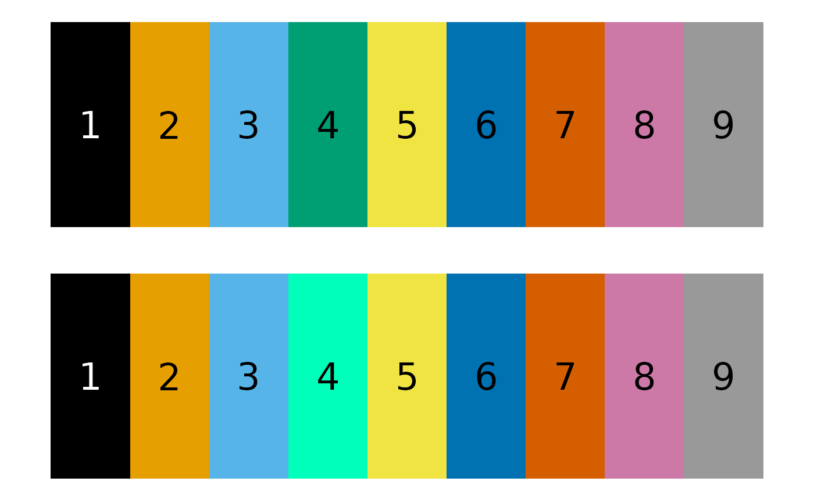
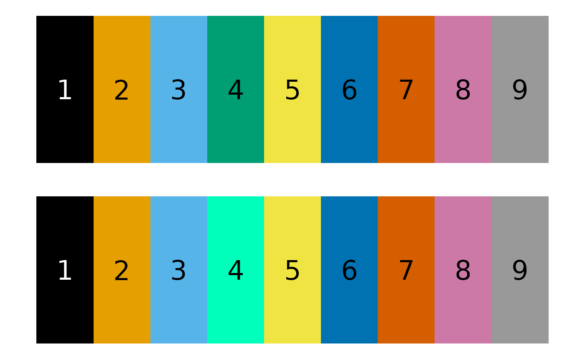

Adjusts the saturation and brightness of RGB colors.
Usage
adjust_color(
rgb_color,
which_colors = "all",
saturation = 1,
brightness = 1,
plotting = FALSE
)Arguments
- rgb_color
Matrix of RGB colors (0-1 scale).
- which_colors
The indices of the colors to change. Can be a numeric vector or "all" to adjust all colors.
- saturation
Factor by which to multiply saturation. > 1 = more saturated, < 1 = less saturated.
- brightness
Factor by which to multiply brightness.
- plotting
Logical. Plot resulting color palettes?
Examples
# generate a palette:
p <- grDevices::palette.colors()
# convert to RGB using col2rgb, then divide by 255 to get it into a
# 0-1 range:
p <- t(col2rgb(p)/ 255 )
# we can adjust the saturation and brightness by the same factor:
p_1 <- adjust_color(p, saturation = 2,
brightness = 1.5,
plotting = TRUE)
# or we can pass a vector for the factors:
p_2 <- adjust_color(p,
saturation = seq(0, 2, length.out = 9),
plotting = TRUE)
 # or we can target a single color:
p_3 <- adjust_color(p, which_colors = 4,
saturation = 2, brightness = 2,
plotting = TRUE)

# or we can target a single color:
p_3 <- adjust_color(p, which_colors = 4,
saturation = 2, brightness = 2,
plotting = TRUE)
